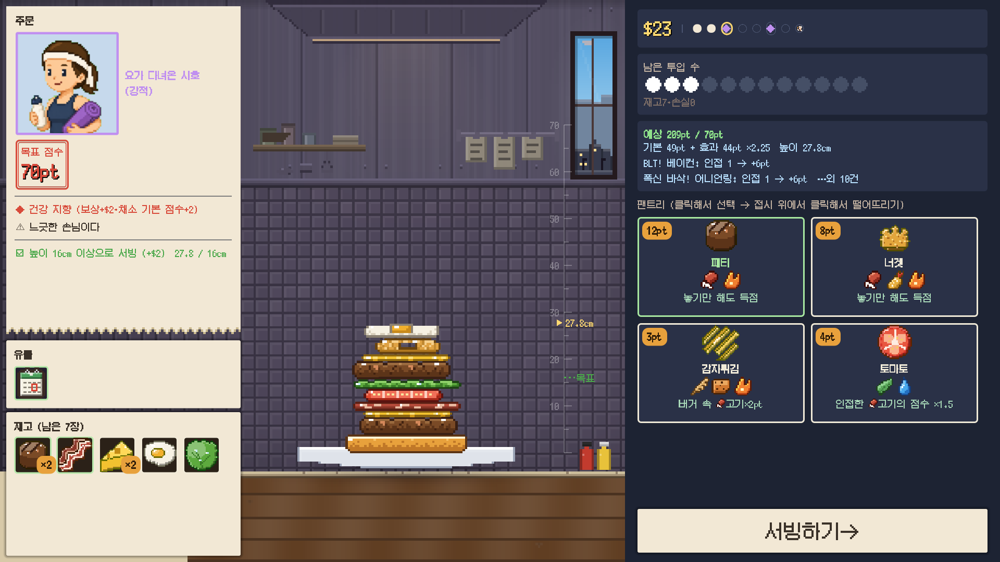
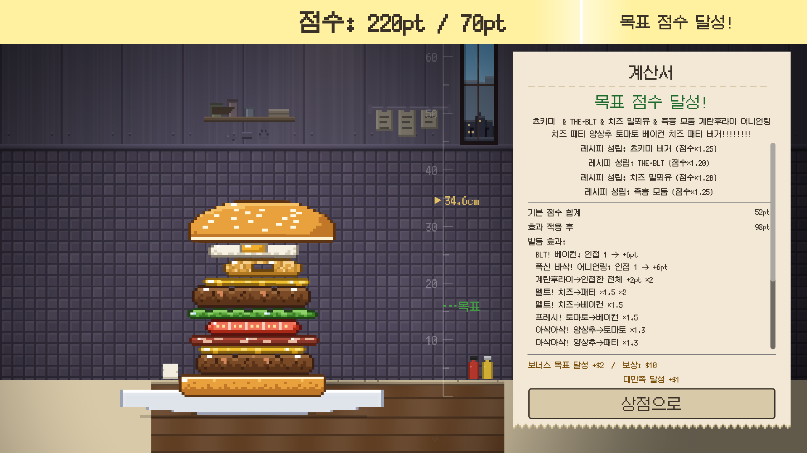
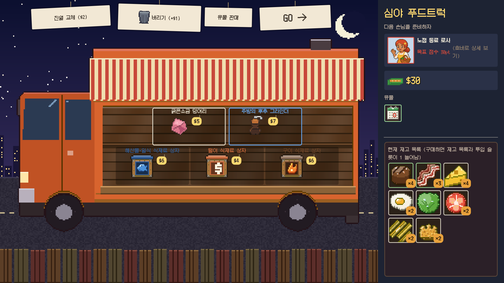

어떤 게임인가요?
탑버거는 물리로 버거를 쌓아 올리는 덱 빌딩 로그라이크입니다.
당신은 버거 가게의 요리사입니다. 손님이 부르는 목표 점수를 그 자리에서 버거로 조립해 내놓아야 합니다. 문제는 재료가 물리 법칙에 따라 떨어진다는 것. 노리고 떨어뜨려서 무너지지 않게 쌓는 건 순전히 당신의 손끝에 달렸습니다. 서로 붙어 있는 재료가 효과를 연쇄시키고, 높고 가지런히 쌓을수록 점수가 커집니다.
게임의 흐름

STEP 1
노려서 떨어뜨리기
손에 든 재료를 접시 위로 노려서 떨어뜨리고, 인접으로 시너지를 발동합니다. 재료는 구르고, 기울고, 무너집니다.

STEP 2
끼워서 시너지
위쪽 번을 얹어 내놓으면 채점. 인접한 재료의 효과가 연쇄하며 점수가 치솟습니다. 목표 미달이면 그 자리에서 게임 오버.

STEP 3
밤의 푸드트럭
손님을 한 명 처리할 때마다 밤의 푸드트럭(상점)이 열립니다. 식재료 상자와 유물을 사고 필요 없는 재료를 처분해, 마지막 보스를 만족시키면 승리입니다.
쌓아 올리는 것
- 재료 90종 이상가점, 배율, 받아내기. 모든 효과는 "인접"을 향합니다
- 레시피 30종 이상특정 조합으로 전체 배율. 성공하면 새 재료가 해금됩니다
- 유물 40종 이상태그 전체를 끌어올리는 상시 효과
- 요리사 8명전용 번과 초기 덱
- 개성이 다른 손님들좋아하는 것, 싫어하는 것, 뼈. 같은 손님이라도 주문은 매번 달라집니다
- 도전 과제 70개 이상도감과 버거 앨범도 수록
실력 시험
가게 등급 ★0~5와 "베테랑 셰프"(투하 위치가 자동으로 좌우 왕복)로 난이도를 올릴 수 있습니다. 데일리 챌린지와 연장 영업 점수는 Steam 순위표에서 겨룹니다.
{kind=link}
{kind=link}
{kind=link}
{kind=link}
{kind=link}
게임 정보
- 제목
- 탑버거
- 다른 이름
- A Bun Above ／ いただきバーガー
- 장르
- 물리 쌓기 × 덱 빌딩 로그라이크
- 개발・배급
- NoZworks
- 플랫폼
- PC (Steam) ／ Windows 10·11 (64비트)
- 출시일
- 2026년 4분기 (예정)
- 지원 언어
- 한국어 / 日本語 / English / 简体中文 / 繁體中文 / Deutsch / Français / Español / Português (Brasil) / Русский
찜 목록에 추가하고 출시를 기다려 주세요
Steam 상점 페이지로